How to audit Drupal Sites
2016.08.06 | DrupalCorn Camp 2016
Jon Peck

Software Architect at Four Kitchens
What is an audit?
- Official inspection of accounts
- Validate the good things
- Highlight areas of improvement
Why audit sites?
- Learn about contents and structure
- Ensure optimal configuration
- Discover areas of improvement
Every site is unique, but...
- Built with the same framework
- Similar architectural requirements
- One size fits most
Effective auditing
- Consistent
- Quantifiable
- Contextually aware
- Easy to understand
- Actionable recommendations
Auditing Tools
Yup, it's wood.
Site Audit
- drupal.org/project/site_audit
- Drupal 7 and 8 site analyzer
- Drush command on target platform
- Powers Launch Check on Pantheon
What does Site Audit report?
- Best Practices
- Block
- Cache
- Codebase
- Content
- Cron
- Database
- Extensions
- Front End
- Security
- System Status
- Users
- Views
- Watchdog
What doesn't Site Audit analyze?

- Usability and site experience
- Aesthetics
- Semantic content
Read the Full Manual
drush help --filter=site_audit
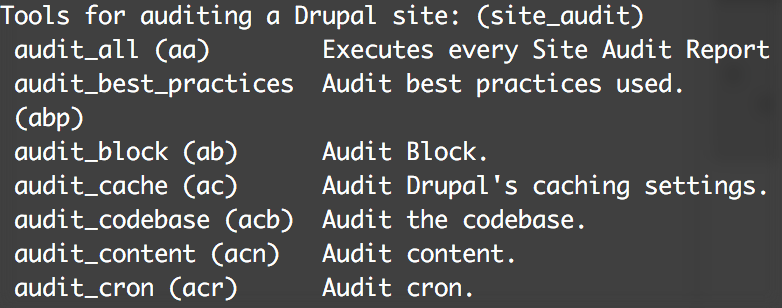
Audit Cache
drush audit_cache
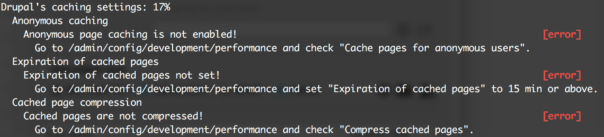
Show detailed results
drush ac --detail
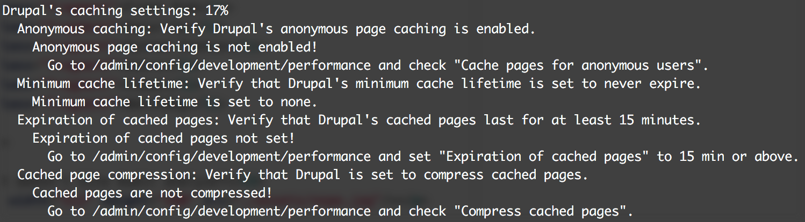
JSON output
drush audit_cron --json
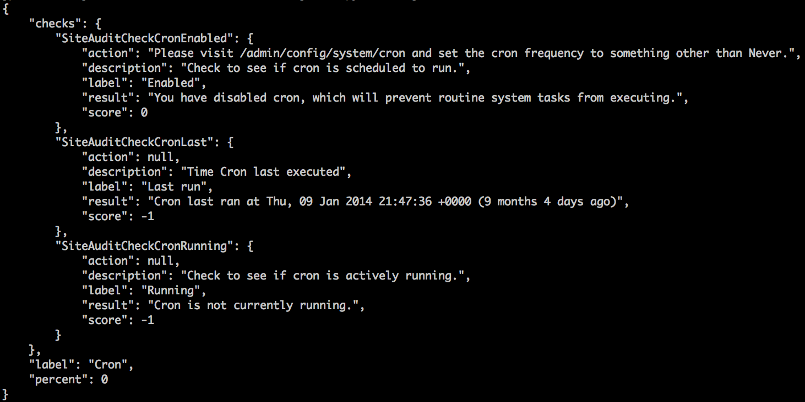
HTML output
drush audit_best_practices --html --detail
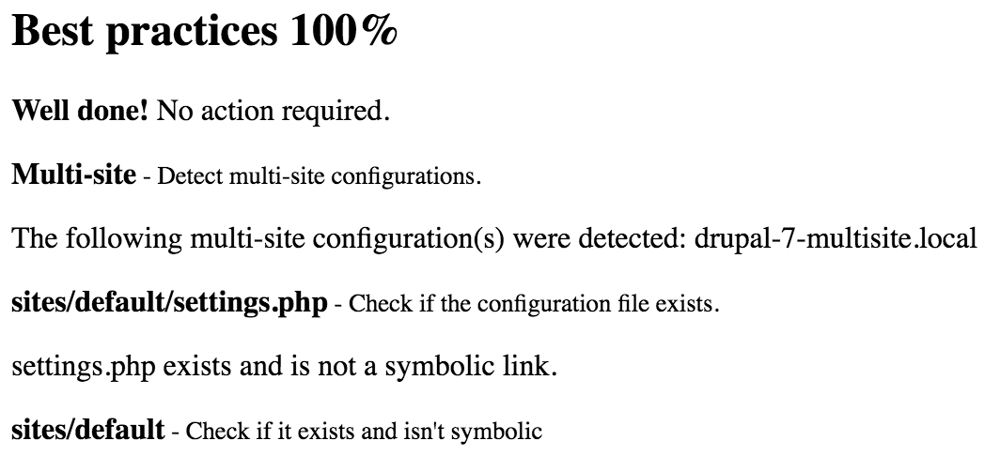
Audit All
drush aa --skip=insights --html --bootstrap
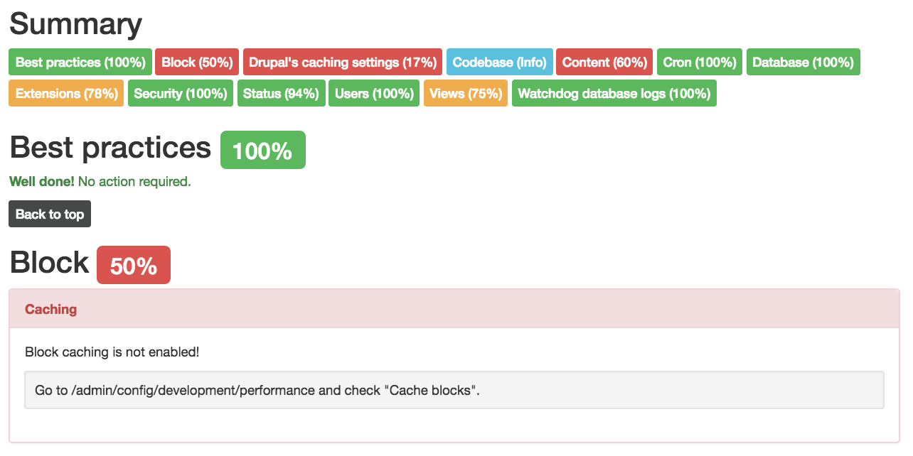
Extending Site Audit
- Modules can implement both Checks and Reports
- Documentation in
README.md - Drupal.org Issue Queue
- GitHub Pull Requests
Share your Checks and Reports!
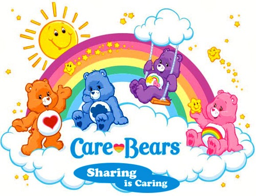
Site Audit Drupal Console Support!
8.x-3.x-dev - work in progress...
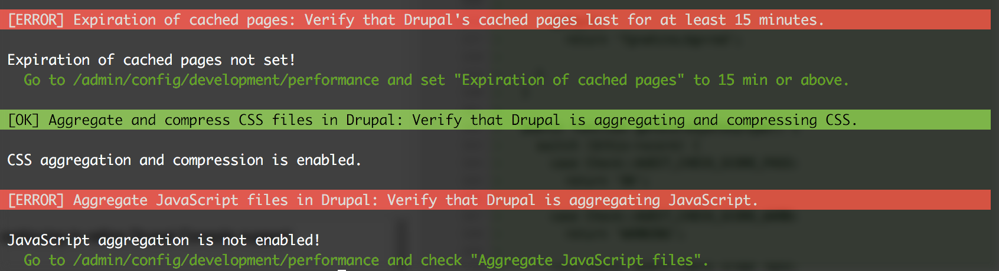
Tools with Site Audit support

Unused Modules
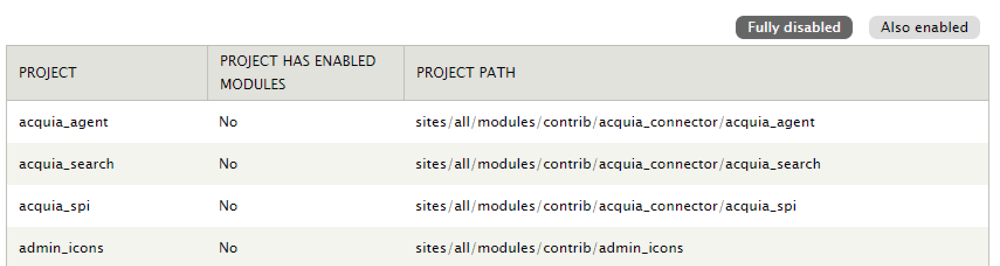
- drupal.org/project/unused_modules
- Lists projects that can be safely deleted
- Ignores disabled child modules
Security Review
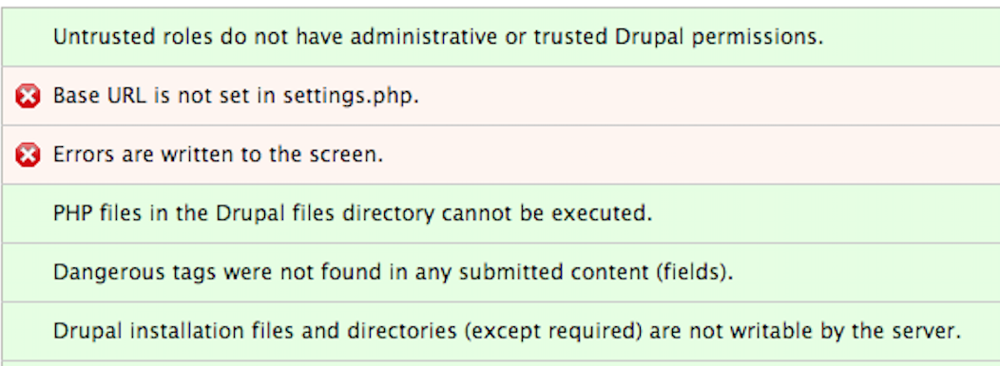
- drupal.org/project/security_review
- Checks site and hosting configuration, site content
Hacked!
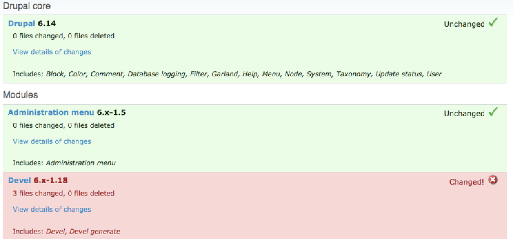
- drupal.org/project/hacked
- Compares contrib with versions on drupal.org
Sensitive Data
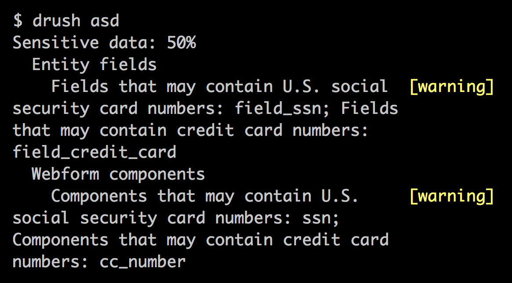
- drupal.org/project/sensitive_data
- search content for sensitive information, like credit card or ID numbers
Cache Audit

- drupal.org/project/cacheaudit
- Caching settings of Drupal core, Block, Views, Panels
- Panels is unique (not in Site Audit)
PHP_CodeSniffer / Coder
- github.com/squizlabs/PHP_CodeSniffer
- drupal.org/project/coder
- Use Drupal 8 version to analyze code on both 7 and 8
DrupalandDrupalPracticesniffs- Detect deviations from Drupal Coding Standards
PAReview.sh
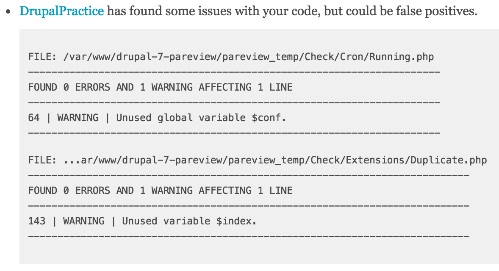
- pareview.sh
- Automated reviews of drupal.org projects
PHP Tools
- PHP Copy/Paste Detector - github.com/sebastianbergmann/phpcpd
- PHP Mess Detector - phpmd.org
- Possible bugs, suboptimal or unused code, overcomplicated expressions
- PHP LOC - github.com/sebastianbergmann/phploc
- Measures size and structure
Git Tools
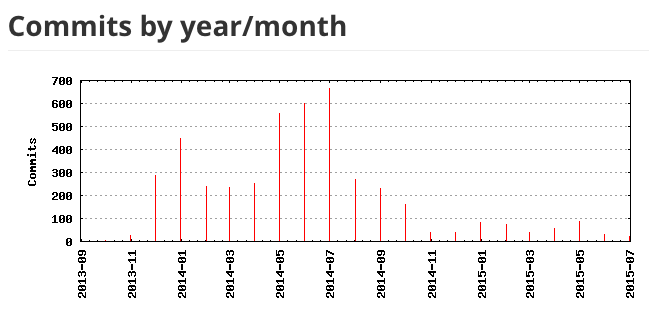
- GitStats - github.com/hoxu/gitstats
- gitinspector - github.com/ejwa/gitinspector
JavaScript Tools
- ESLint - eslint.org
- Pluggable linting utility for JavaScript and JSX
- Official configuration in Drupal 8 core/.eslintrc
- JSCS - jscs.info
- JavaScript Code Style
- JSHint - jshint.com
- Detect errors, potential problems
Hosted Utilities
WebPageTest.org
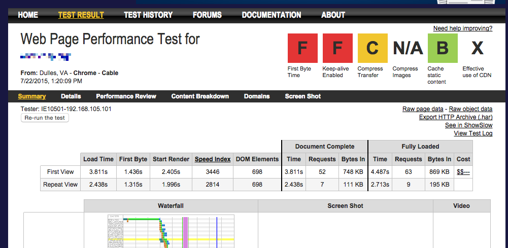
Google PageSpeed Insights
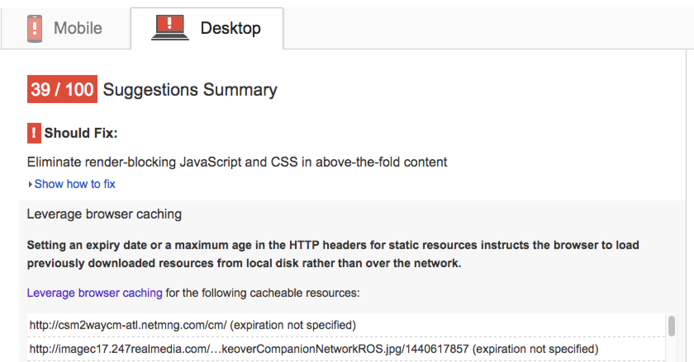
WAVE Web Accessibility Tool
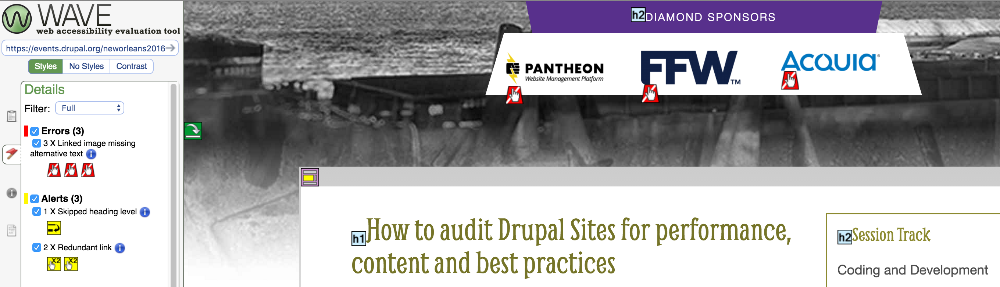
- wave.webaim.org
- Analyzes web pages for accessibility
- Actionable recommendations on how to fix problems
Qualys SSL Server Test
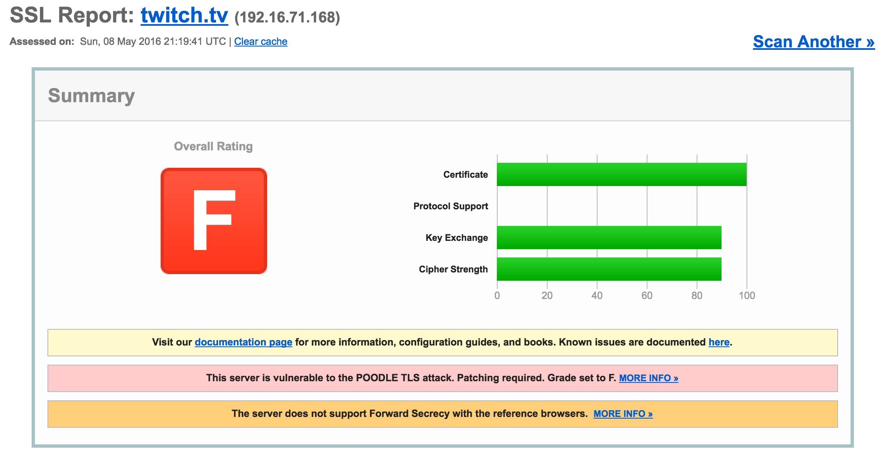
- ssllabs.com/ssltest
- Analyzes SSL configuration
Delivering an audit
Report Structure
- Overview of scope, requirements
- Actionable recommendations
- Appendix
- How to install and use tools
- Raw results
GitBook for publishing reports
- github.com/GitbookIO/gitbook
- Book format and toolchain using Git and Markdown
- Command-line, uses Node.JS
- Outputs HTML, PDF, ebooks, and more
- Incredibly useful for large structured reports
Editing GitBook structure
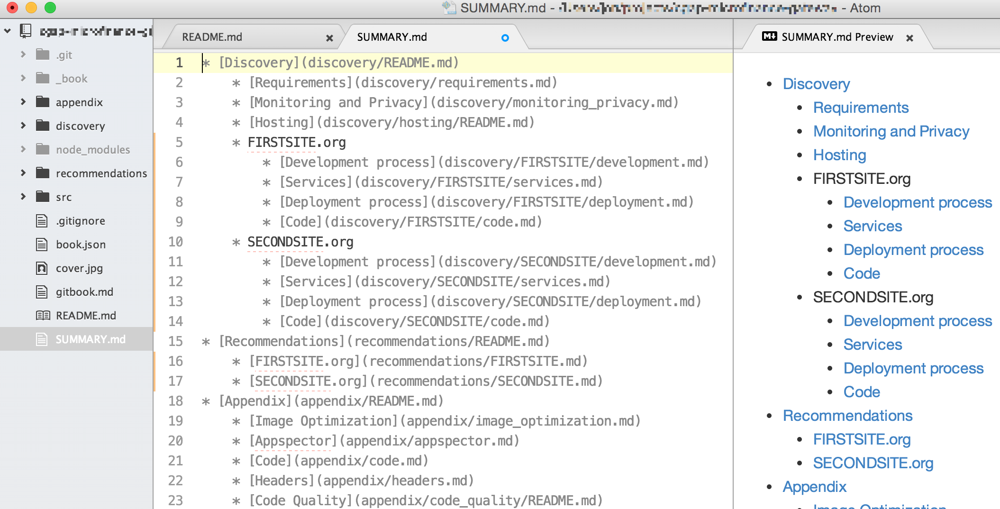
GitBook HTML Format
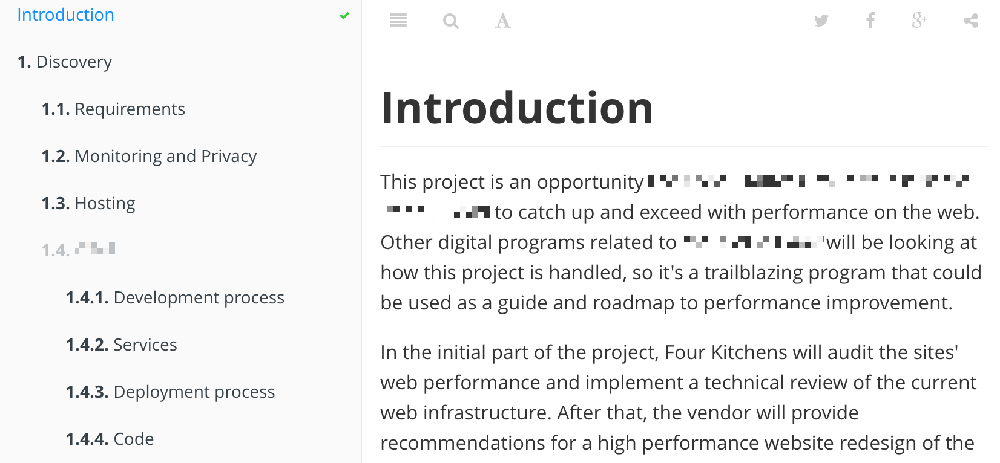
Site Audit co-maintainer wanted.
Interested? Submit an issue.
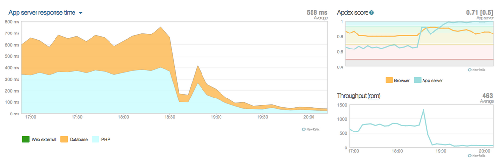
Good configuration matters.
Thank you! Feedback: goo.gl/8cg3Cn